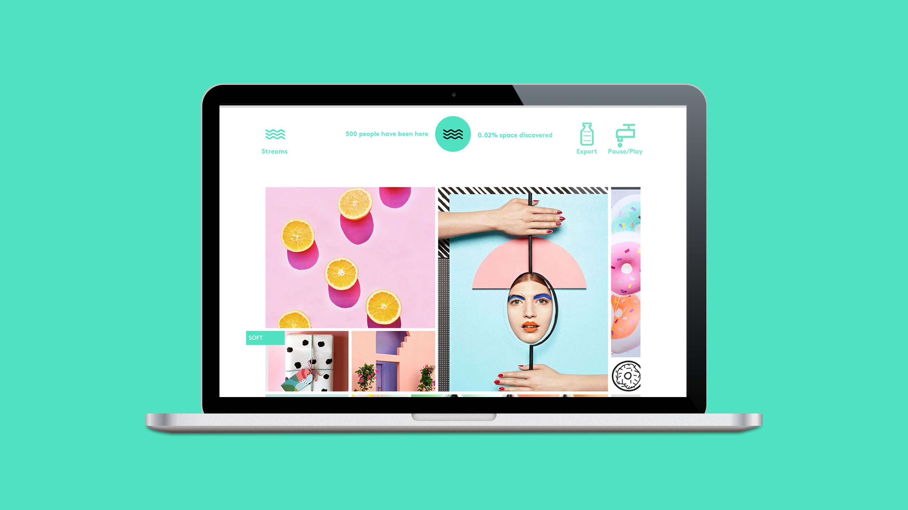

2017
AI tools for designers' inspiration.
In early 2017, machine learning was becoming a real design tool — but the interfaces weren't keeping up. Creative.ai was a startup working on the next generation of creative tools driven by AI and machine learning.
Working with founder Samim Winiger, the project defined concepts and interaction models for a tool that would guide designers through multidimensional latent spaces — turning abstract embeddings into tangible visual inspiration.
The challenge was not just technical but conceptual: how do you make a tool that expands creative thinking rather than replacing it? The work explored new metaphors for navigating possibility spaces that don't map to folders, keywords, or grids.